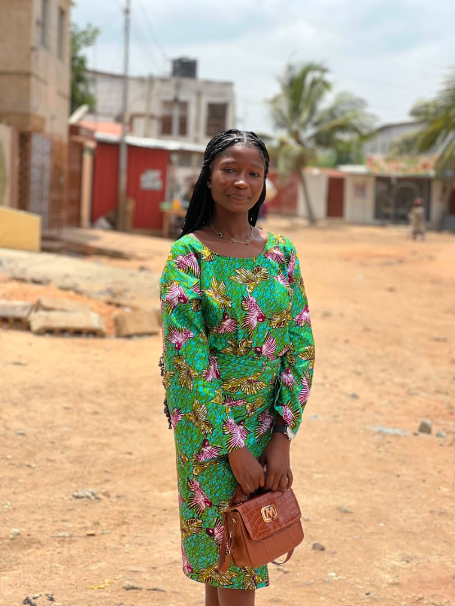

target
Notre Mission
Promouvoir les produits agricoles togolais, soutenir les producteurs locaux et offrir aux consommateurs des produits frais, sains et accessibles.
Agri Togo est une entreprise engagée qui connecte directement les producteurs de nos régions aux consommateurs. Fidèles à notre slogan "Ensemble, valorisons les produits locaux", nous proposons des aliments sains et de qualité afin de soutenir une agriculture togolaise durable, responsable et équitable.
Promouvoir les produits agricoles togolais, soutenir les producteurs locaux et offrir aux consommateurs des produits frais, sains et accessibles.
Être une référence nationale dans la valorisation des produits agricoles et contribuer au développement durable du secteur agricole togolais.
Elle développe la visibilité de la coopérative, anime les réseaux sociaux et fait découvrir les produits locaux au plus grand nombre.
Il coordonne la stratégie de la coopérative et représente les producteurs auprès des partenaires.
Il connecte les produits de la coopérative aux marchés locaux et développe les partenariats commerciaux.
Il veille à la fraîcheur des produits, au transport et à la traçabilité jusqu'au client.

Elle encadre les coopératives de la zone Maritime sur les cultures maraîchères et vivrières.
Il pilote la production de la zone des Plateaux, notamment le maïs, le manioc et les ananas.